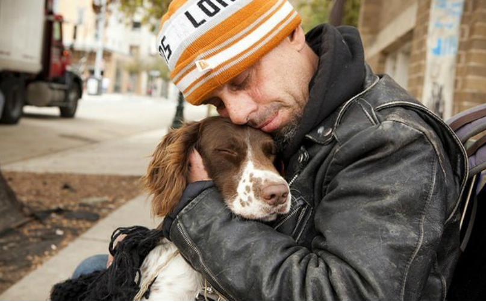
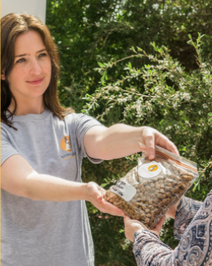

Making sure that the pets of the homeless can get a meal makes it more likely that their humans will eat too- SBS

About Us

Pets of the Homeless Australia provide food, vetinary care and other support to pet owners in need. We help people who are at risk of or currently experience homelessness by making sure their pet companions are well looked after. Our mission is to help keep vulnerable people and their pets together by alleviating their burdens by providing essential pet care during times of hardship.
HELP HOMELESS PEOPLE AND THEIR PETS TODAY